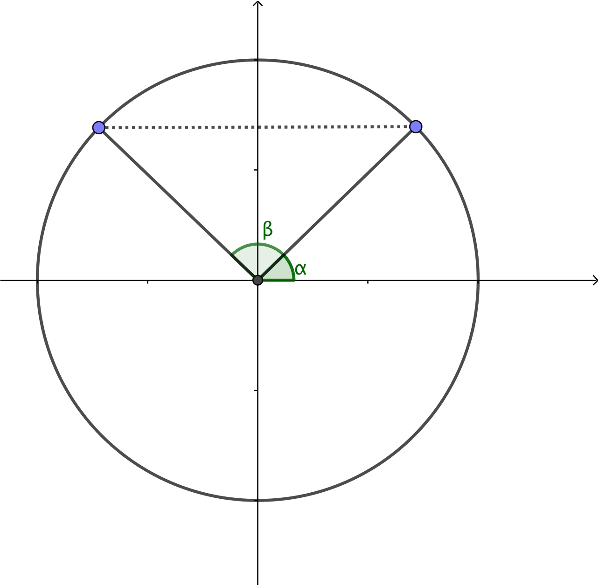

4. Ekvationer med sinus
Vi har tidigare märkt att i en enhetscirkel ger sinus för en vinkel y-koordinaten för periferipunkten, punkten på cirkeln. Då vi speglar periferipunkten i y-axeln märker vi att på bägge sidor om y-axeln har vi en vinkel som ger samma värde.

I bilden gäller att \( \alpha = \pi - \beta \). Vi får att ekvationen \( \sin \alpha =a \) har två lösningar. Vinklarna \( \alpha_0 \) och supplementvinkeln \( 180^{\circ} -\alpha_0 \). Dessutom gäller att när vi har gått ett helt varv, \( 2\pi \), får vi samma värde. Vi talar om att vi har vinklarna \( \alpha_0 \) och \( \pi -\alpha_0 \) och deras multiplar, \( n\cdot 2\pi \).
Lösningarna skriver vi som
- \( \alpha = \alpha_0 + n\cdot 360^{\circ} \) och
- \( \alpha = 180^{\circ}-\alpha_0 + n\cdot 360^{\circ} \) där n är ett heltal
- \( \alpha = \alpha_0 + n\cdot 2\pi \) och
- \( \alpha = \pi-\alpha_0 + n\cdot 2\pi \) där n är ett heltal.
Lösning
Vi vet att för \( \sin \alpha = 1 \) gäller att \( \alpha = \dfrac{\pi}{2} \).
Det betyder att \( 2\alpha = \dfrac{\pi}{2} \Leftrightarrow \alpha = \dfrac{\pi}{4} \).
Eftersom perioden för sinus är \( 2\pi \) måste vi även beakta den när vi löser ekvationen.
Vi får
\( \begin{array}{rcll} 2 \alpha & = & \dfrac{\pi}{2} + n\cdot 2 \pi & | /2\\ \\ \alpha & = & \dfrac{\pi}{4} + n\cdot \pi \end{array} \)
där n är ett heltal, \( \mathbf{Z} \).
Lösning
De vinklar som uppfyller villkoret är de vinklar där \( \alpha = 2\alpha \) och supplementvinklarna \( \alpha = \pi - 2\alpha \). För för vinklarna gäller att värdena upprepas med en viss period, \( 2\pi \).
Vi får att
\( \begin{array}{rclcrcl} \sin \alpha & = & \sin 2\alpha \\ \alpha & = & 2\alpha + n\cdot 2\pi & \text{ eller } & \alpha & = & \pi - 2\alpha + n\cdot 2\pi \\ -\alpha & = & n\cdot 2\pi & \text{ eller } & 3\alpha & = & \pi + n\cdot 2\pi \\ \alpha & = & n\cdot 2\pi & \text{ eller } & \alpha & = & \dfrac{\pi}{3} + n\cdot \dfrac{2\pi}{3}, n \in \mathbb{Z} \\ \end{array} \)
Märk att \( -\alpha = n\cdot 2\pi \Leftrightarrow \alpha = n\cdot 2\pi \) eftersom n är ett heltal.
För ekvationer med sinus gäller följande
Ekvationen \( \sin \alpha = a \)
\( \alpha = \alpha_0 + n\cdot 360^{\circ} \) och
\( \alpha = 180^{\circ}-\alpha_0 + n\cdot 360^{\circ} \) där n är ett heltal
eller som
\( \alpha = \alpha_0 + n\cdot 2\pi \) och
\( \alpha = \pi-\alpha_0 + n\cdot 2\pi \) där n är ett heltal.
Sinus på räknaren
Ekvationen \( \sin \alpha = 0,6 \) kan man lösa på olika sätt på räknare
- På en vanlig räknare skriver man in sin-1 (0,6). Den vinkel som du får är i intervallet 0 till 90o, 0 till \( \dfrac{\pi}{2} \) radianer. Resten lösningar får du med hjälp av enhetscirkeln.
- På räknarprogram (GeoGebra, TI-Nspire CAS) gäller solve(sin x = 0.6,x). Eftersom de vill ge exakta värden är kommandot nsolve i bland bättre.
Uppgifter
- Lös följande ekvationer med en tiondels grads noggrannhet.
- \( \sin \alpha = 0,55 \)
Räknaren ger oss \( 33,4^{\circ} \).
Vidare har vi att \( 180^{\circ} - 33,4^{\circ} = 146,6^{\circ} \).
Alla vinklar är \( \alpha = 33,4^{\circ} + n\cdot 360^{\circ} \) och \( \alpha = 146,6^{\circ} + n\cdot 360^{\circ} \) där \( n \) är ett heltal.
- \( \sin \alpha = 0,37 \)
Räknaren ger oss \( 21,7^{\circ} \).
Vidare har vi att \( 180^{\circ} - 21,7^{\circ} = 158,3^{\circ} \).
Alla vinklar är \( \alpha = 21,7^{\circ} + n\cdot 360^{\circ} \) och \( \alpha = 158,3^{\circ} + n\cdot 360^{\circ} \) där \( n \) är ett heltal.
- \( \sin \alpha = -0,55 \)
Räknaren ger oss \( -33,4^{\circ} \).
Vidare har vi att \( 180^{\circ} - (-33,4^{\circ}) = 213,4^{\circ} \).
Alla vinklar är \( \alpha = -33,4^{\circ} + n\cdot 360^{\circ} \) och \( \alpha = -213,4^{\circ} + n\cdot 360^{\circ} \) där \( n \) är ett heltal.
Vi kan lösa vinkeln rakt på sak eller först förenkla med hjälp av \( -\sin \alpha = \sin (-\alpha) \).
- \( \sin \alpha = 0,55 \)
- Bestäm de exakta värdena av sinus för följande vinklar
0 \( \dfrac{1}{2} \) \( \dfrac{1}{\sqrt{2}} \) \( \dfrac{\sqrt{3}}{2} \) 1 \( \sin 0 \) \( \sin \dfrac{\pi}{6} \) \( \sin \dfrac{\pi}{4} \) \( \sin \dfrac{\pi}{3} \) \( \sin \dfrac{\pi}{2} \) \( \sin \dfrac{2\pi}{3} \) \( \sin \dfrac{3\pi}{4} \) \( \sin \dfrac{5\pi}{6} \) \( \sin \pi \) 0 \( \dfrac{1}{2} \) \( \dfrac{1}{\sqrt{2}} \) \( \dfrac{\sqrt{3}}{2} \) 1 \( \sin 0 \) \( \sin \dfrac{\pi}{6} \) \( \sin \dfrac{\pi}{4} \) \( \sin \dfrac{\pi}{3} \) \( \sin \dfrac{\pi}{2} \) \( \sin \dfrac{2\pi}{3} \) \( \sin \dfrac{3\pi}{4} \) \( \sin \dfrac{5\pi}{6} \) \( \sin \pi \) - Lös följande ekvationer genom att använda dig av radianer.
- \( \sin \alpha = \dfrac{1}{\sqrt{2}} \)
Tabellboken ger oss \( \dfrac{\pi}{4} \).
Desstuom har vi vinkeln \( \pi - \dfrac{\pi}{4} = \dfrac{3\pi}{4} \).
Alla vinklar är \( \alpha = \dfrac{\pi}{4} + n\cdot 2\pi \) och \( \alpha = \dfrac{3\pi}{4} + n\cdot 2\pi \) där \( n \) är ett heltal.
- \( \sin \alpha = \dfrac{\sqrt{3}}{2} \)
Tabellboken ger oss \( \dfrac{\pi}{3} \).
Desstuom har vi vinkeln \( \pi - \dfrac{\pi}{3} = \dfrac{2\pi}{3} \).
Alla vinklar är \( \alpha = \dfrac{\pi}{3} + n\cdot 2\pi \) och \( \alpha = \dfrac{2\pi}{3} + n\cdot 2\pi \) där \( n \) är ett heltal.
- \( \sin 2\alpha = \dfrac{1}{\sqrt{2}} \)
Tabellboken ger oss en vinkel \( \dfrac{\pi}{4} \).
Vi får
\( \begin{array}{rcl} 2 \alpha & = & \dfrac{\pi}{4} + n\cdot 2\pi \\ \alpha & = & \dfrac{\pi}{8} + n\cdot \pi, n \in \mathbf{ Z } \\ \end{array} \)
Desstuom har vi vinkeln
\( \begin{array}{rcl} 2 \alpha & = & \pi - \dfrac{\pi}{4} + n\cdot 2\pi \\ 2 \alpha & = & \dfrac{3\pi}{4} + n\cdot 2\pi \\ \alpha & = & \dfrac{3\pi}{8} + n\cdot \pi, n \in \mathbf{ Z } \\ \end{array} \)
- \( \sin 3\alpha = \dfrac{1}{\sqrt{2}} \).
För vinkeln \( \alpha = \dfrac{1}{\sqrt{2}} \) gäller att \( \alpha = \dfrac{\pi}{4} \). Dessutom gäller att \( \pi -\alpha = \dfrac{\pi}{4} \)
Vi måste beakta bägge vinklarna!
Vi får
\( \begin{array}{rcll} 3 \alpha & = & \dfrac{\pi}{4} +n\cdot 2\pi & | \text{ Perioden!} \\ \\ \alpha & = & \dfrac{\pi}{12} +n\cdot \dfrac{2\pi}{3} \end{array} \)
och
\( \begin{array}{rcll} \pi- 3 \alpha & = & \dfrac{\pi}{4} +n\cdot 2\pi & | \text{ Perioden!} \\ - 3 \alpha & = & \dfrac{\pi}{4} -\pi +n\cdot 2\pi \\ - 3 \alpha & = & -\dfrac{3\pi}{4} +n\cdot 2\pi & | /(-3) \\ \alpha & = & \dfrac{\pi}{4} -n\cdot \dfrac{2\pi}{3} \end{array} \)
Sätter vi in negativa värden i \( -n\cdot \dfrac{2\pi}{3} \) får vi samma som om vi skulle sätta positiva värden i \( n\cdot \dfrac{2\pi}{3} \). Vi kan skriva perioden som \( n\cdot \dfrac{2\pi}{3} \).
Lösningarna är \( \alpha = \dfrac{\pi}{12} +n\cdot \dfrac{2\pi}{3} \) och \( \alpha = \dfrac{\pi}{4}+n\cdot \dfrac{2\pi}{3} \).
- \( \sin \alpha = \dfrac{1}{\sqrt{2}} \)
- Lös ekvationen \( \sin \dfrac{\alpha}{6}=0 \).
Vi får att
\( \begin{array}{rclcrcl} \dfrac{\alpha}{6} & = & 0+ n\cdot2\pi & \text{ eller } & \dfrac{\alpha}{6} & = & \pi - 0 + n\cdot2\pi \\ \alpha & = & n\cdot 12\pi & \text{ eller } & \alpha & = & 6\pi + n\cdot 12 \pi, n \in \mathbb{Z}\\ \end{array} \)
Lösningarna till vänster är \( \ldots, -12\pi, 0, 12\pi, \ldots \) och till höger \( \ldots, -6\pi, 6\pi, 18\pi,\ldots \)
Vi kan inte kombinera lösningarna.
- Lös ekvationen \( 4\sin \dfrac{\alpha}{6}=2 \).
Vi får att \( \sin\dfrac{\alpha}{6} = \dfrac{1}{2} \) som vi delar upp:
\( \begin{array}{rclcrcl} \dfrac{\alpha}{6} & = & \dfrac{\pi}{6}+n\cdot 2\pi & \text{ eller } & \dfrac{\alpha}{6} & = & \dfrac{5\pi}{6}+n\cdot 2\pi, n \in \mathbb{Z} \\ \alpha & = & \pi + n\cdot 12\pi & \text{ eller } & \alpha & = & 5\pi + n\cdot 12\pi \\ \end{array} \)
- Lös ekvationen \( \sin 2\alpha = -\sin\alpha \).
Vi börjar med att skriva \( -\sin\alpha \) som \( \sin(-\alpha) \). Ekvationen ser ut som följande, \( \sin 2\alpha = \sin(-\alpha) \).
Vi får att
\( \begin{array}{rclcrcl} 2 \alpha & = & -\alpha +n\cdot 2\pi & \text{ eller } & 2\alpha & = & \pi -(-\alpha)+n\cdot 2\pi, n\in \mathbb{Z} \\ 3 \alpha & = & n\cdot 2\pi & \text{ eller } & \alpha & = & \pi +n\cdot 2\pi \\ \alpha & = & n\cdot\dfrac{2\pi}{3} & \text{ eller } & \alpha & = & \pi +n\cdot 2\pi, n \in \mathbb{Z}\\ \end{array} \)
- Lös ekvationen \( \sin x = \sin 3x \).
Vi får
\( \begin{array}{rcll} x & = & 3x + n\cdot 2\pi \\ -2x & = & n\cdot 2\pi & | /-2\\ x & = & -n\cdot \pi \end{array} \)
Eftersom n är ett heltal är \( -n\cdot \pi \) samma som \( n\cdot \pi \).
Den andra möjligheten är
\( \begin{array}{rcll} x & = & \pi -3x +n\cdot 2\pi \\ 4x & = & \pi +n\cdot 2\pi & | /4\\ x & = & \dfrac{\pi}{4} + n\cdot \dfrac{\pi}{2} \\ \end{array} \)
Alltså \( x=n\pi \) och \( x=\dfrac{\pi}{4}+n\dfrac{\pi}{2} \).
- Från uppgiften ovan, bestäm de lösningar som är i intervallet \( -\dfrac{\pi}{2} \leq x \leq \dfrac{\pi}{2} \).
Den första lösningen ger vinklarna \( \ldots, -\pi, 0, \pi ,2\pi,\ldots \) där 0 är i intervallet \( -\dfrac{\pi}{2} \leq x \leq \dfrac{\pi}{2} \).
Den andra lösningen ger vinklarna \( \ldots, -\dfrac{3\pi}{4}, -\dfrac{\pi}{4}, \dfrac{\pi}{4}, \dfrac{3\pi}{4}, \ldots \) där \( -\dfrac{\pi}{4} \) och \( \dfrac{\pi}{4} \) är i intervallet \( -\dfrac{\pi}{2} \leq x \leq \dfrac{\pi}{2} \) .
Alltså vinklarna \( -\dfrac{\pi}{4}, 0, \dfrac{\pi}{4} \).
- Från uppgiften ovan, bestäm de lösningar som är i intervallet \( -\dfrac{\pi}{2} \leq x \leq \dfrac{\pi}{2} \).
- För vilka vinklar gäller att \( (\sin x)(\sin x +1)=0 \).
Vi utnyttjar nollregeln och får
\( \begin{array}{rcll} \sin x & = & 0 \\ x & = & 0 +n \cdot \pi\\ \end{array} \)
och
\( \begin{array}{rcll} \sin x +1 & = & 0 \\ \sin x & = & -1 \\ x & = & \dfrac{3\pi}{2} +n\cdot 2\pi \\ \end{array} \)
Alltså \( x=n\cdot \pi \) och \( x=\dfrac{3\pi}{2}+n\cdot 2\pi \).
- Lös \( 2\sin^2 \alpha -\sin \alpha =1 \).
Vi substituerar \( \sin \alpha = x \).
Då får vi\( 2x^2 -x -1 =0 \). Då vi löser andragradsekvationen får vi \( x=-\dfrac{1}{2} \) och \( x=1 \).
Alltså
\( \begin{array}{rcll} \sin \alpha & = & -\dfrac{1}{2} \\ \\ \alpha & = & \dfrac{7\pi}{6} +n\cdot 2\pi & \text{ och }\\ \\ \alpha & = & \dfrac{11\pi}{6} +n\cdot 2\pi \end{array} \)
och
\( \begin{array}{rcl} \sin \alpha & = & 1 \\ \alpha & = & \dfrac{\pi}{2} + n\cdot 2\pi\\ \end{array} \).
- Lös ekvationen \( 2\sin^2 x -\sin x =0 \).
Vi bryter ut det gemensamma \( \sin x (2\sin x -1)=0 \) och tillämpar nollregeln.
\( \begin{array}{rclcrcl} \sin x & = & 0 & \text{ eller } & 2\sin x -1 & = & 0 \\ x & = & 0 + n\cdot 2\pi & & \sin x & = & \dfrac{1}{2} \\ & & & & x & = & \dfrac{\pi}{6} +n\cdot 2\pi \\ \end{array} \).
- Lös ekvationen \( \sin^2 x + \sin x =2 \).
Vi substituerar \( \sin x = t \). Vi får att \( t^2+t = 2 \Leftrightarrow t^2+t-2=0 \), som vi löser med rotformeln, \( t=\dfrac{-1\pm\sqrt{1^2-4\cdot1(-2)}}{2\cdot 1} = \dfrac{-1\pm\sqrt{9}}{2} = \dfrac{-1\pm 3}{2} \). Vi har alltså t=1 och t=-2.
Vi substituerar tillbaka och får då att \( \sin x = 1 \) och att \( \sin x = -2 \)
\( \sin x = -2 \) uppfylls aldrig eftersom värdemängden för sinus är mellan -1 och 1. \( \sin x = 1 \) har lösningarna \( \dfrac{\pi}{2} + n\cdot 2\pi, n\in \mathbb{Z} \).